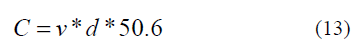

|
ETAPA 5: QUANTIFICAÇÃO DO ESTOQUE DE CARBONO Assumindo 50,6% como o teor médio de carbono na madeira de eucalipto, a quantidade de carbono pode ser estimada através da seguinte relação:  onde C é a quantidade de Carbono em metros cúbicos, v o volume de madeira da floresta em metros cúbicos e d é a densidade básica da madeira que de acordo com [8] é de 600 kg/m³. Utilizando os dados de volume de madeira, Tabela I e de quantificação de árvores, Tabela II determinou-se através de (13) a quantidade de carbono na floresta em 2011 e em 2012.
Observa-se através da Figura 3 e dos dados da Tabela V que a quantidade de carbono na floresta aumentou já que a floresta absorveu 788150 kg/m³ de carbono em um período de um ano.
|